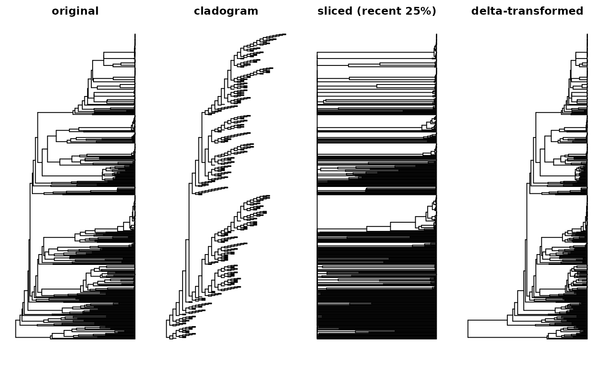

A family of functions to modify the branch lengths of a phylogeny in ways
relevant to spatial phylogenetic analyses. These fall into two conceptual
categories. Affine rescaling (rescale_tree) applies a single
multiplicative factor to every branch, changing units without changing
relative branch lengths. Differential transforms (slice_tree, delta_tree,
uniform_tree) change the shape of the branch-length distribution by
treating different branches differently based on their position or length.
Usage
rescale_tree(tree, method = c("raw", "sum1", "tip1"))
slice_tree(tree, min = -Inf, max = Inf, reference = NULL, from = "tips")
delta_tree(tree, delta)
uniform_tree(tree)Arguments
- tree
Phylogeny of class ape::phylo.
- method
Character giving the rescaling method for
rescale_tree:"raw","sum1", or"tip1".- min, max
Numeric giving the lower and upper bounds of the depth window for slicing, in the same units as
referenceif provided, otherwise in the units oftree$edge.length. Defaults are-InfandInf(no slicing). Seefromfor the meaning of "depth."- reference
Optional phylogeny of class ape::phylo whose branch lengths define the slicing window. Must share topology with
tree. IfNULL(default), the window is defined ontree's own branch lengths. When supplied, slicing identifies the fraction of each reference-branch's extent that falls within the window, and applies that fraction totree's branch length. This allows slicing a phylogram by a chronogram, for example.- from
Character:
"tips"(default) or"root". Determines whetherminandmaxare measured from the tips (somin = 10, max = 30selects branch portions 10 to 30 units before the deepest tip) or from the root (somin = 10, max = 30selects branch portions 10 to 30 units after the root).- delta
Numeric exponent for
delta_tree. Must be positive. For the limiting casedelta = 0, useuniform_treeinstead.
Value
A phylogeny of class ape::phylo with modified branch lengths.
Topology is always preserved; tree$tip.label, tree$node.label,
tree$edge, and tree$Nnode are unchanged.
Details
The two categories of operations serve different purposes and can be composed. A typical workflow is to apply a differential transform first (if any), and then optionally an affine rescaling (if any).
slice_tree retains only the portions of each branch that fall within
a specified window along the tree, setting other portions to zero. This
implements the "time-sliced" approach to phylodiversity analysis, enabling
questions about divergence within a specific depth range. The window can
be defined on the tree itself, or on a separate reference tree with
identical topology (e.g., slicing a phylogram by a chronogram, to isolate
molecular divergence within a specific age range). See Araujo et al. (2024)
for discussion of related approaches. Note that slicing modifies branch
lengths, which changes the depth coordinate system of the resulting tree
(because zeroed-out branches near the root collapse, shifting the retained
portion toward the root). If you need to apply multiple operations that
depend on the original tree's depth structure, pass the original tree as
reference on subsequent calls.
delta_tree applies Pagel's (1999) delta transformation, raising each
node depth (root-to-node distance) to the power delta, then recomputing
branch lengths from the transformed depths. The resulting tree is then
rescaled to match the original tree's total height, so that only the
distribution of branch length along the tree changes, not the total.
Values of delta < 1 lengthen deep branches at the expense of shallow
ones, emphasizing deeper divergence; values of delta > 1 do the opposite,
emphasizing recent divergence. Delta is the continuous analog of
slice_tree: both operate on position within the tree rather than on
individual branch lengths. The transformation is most interpretable on
ultrametric trees, where node depths have a single consistent meaning.
See Saladin et al. (2019) for an application to spatial phylogenetics.
uniform_tree sets all branch lengths equal to 1, producing a
cladogram. Phylogenetic diversity computed on a uniform tree is equivalent
to clade richness (CR), giving equal weight to every splitting event.
rescale_tree applies an affine rescaling:
"raw"—no rescaling (identity operation)."sum1"—divides all branch lengths so they sum to 1. Branch lengths then represent fractions of total tree length, and PD values represent the fraction of total evolutionary history present in a site."tip1"—divides all branch lengths by the longest root-to-tip path, so that the longest path equals 1. For ultrametric trees, every tip has path length 1 (following Pavoine et al. 2005). For non-ultrametric trees, only the longest path equals 1.
Rescaling does not change relative branch lengths, so it does not affect spatial patterns, correlations, or statistical significance of diversity metrics—only their numeric scale. Differential transforms, by contrast, change what the metrics are measuring.
References
Araujo, M. L., Silva, V., and Cassemiro, F. A. S. (2024). 'treesliceR': a package for slicing phylogenies and inferring phylogenetic patterns over evolutionary time. Ecography, e07364.
Pagel, M. (1999). Inferring the historical patterns of biological evolution. Nature, 401(6756), 877-884.
Pavoine, S., Ollier, S., and Dufour, A.-B. (2005). Is the originality of a species measurable? Ecology Letters, 8(6), 579-586.
Saladin, B., Thuiller, W., Graham, C. H., Lavergne, S., Maiorano, L., Salamin, N., and Zimmermann, N. E. (2019). Environment and evolutionary history shape phylogenetic turnover in European tetrapods. Nature Communications, 10(1), 249.
Examples
moss_tree <- ape::read.tree(system.file(
"extdata", "moss_tree.nex", package = "phylospatial"))
par(mfrow = c(1, 4), mar = c(2, 1, 2, 1))
plot(moss_tree,
show.tip.label = FALSE, main = "original")
plot(uniform_tree(moss_tree),
show.tip.label = FALSE, main = "cladogram")
plot(slice_tree(rescale_tree(moss_tree, "tip1"),
min = 0, max = 0.25, from = "tips"),
show.tip.label = FALSE, main = "sliced (recent 25%)")
plot(delta_tree(moss_tree, delta = 1/3),
show.tip.label = FALSE, main = "delta-transformed")
